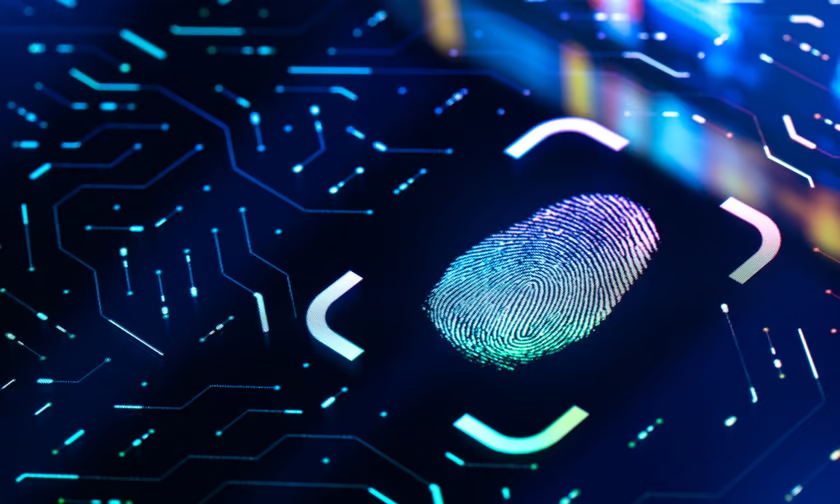

Complexities and Social Challenges
Biometric Sustainability & Risk
There are many biometric technologies like fingerprints, face scans, and even your posture or your voice. Biometric data can be a very efficient security layer but it can have many serious ethical problems. A big problem with biometric security is that you can't change your fingerprint or face like a password if the data becomes compromised. Biometrics is your DNA and physical structure it cannot be changed. Once your biometric data is stolen or compromised, it's completely gone and you will not know who has that data which is why its so risky.

Privacy Concerns
Another major concern for biometric use is privacy. Most people aren't even aware when their biometric information is being collected or where it's being stored. Governments and companies sometimes take the information without fully explaining to people what they're going to use it for And once they have it, you cant remove it from them because you won ever truly know if its gone for their storage system.
Consent and Awareness
Then there's the issue of consent. One clicking "I agree" does not necessarily mean they truly understand the risks. The biometric systems are often embedded in telephones, cameras, and buildings, and people just give consent without truly reading the whole terms and conditions. And it does not mean that they agree with what eventually occurs to that data if it is stolen or sold.
Bias and Discrimination
There's also a tremendous problem with bias. Some of the biometric technologies do not work as well with people who have darker skin tones, older people, or people with disabilities. That can lead to unequal treatment or being left out altogether. It might not identify a person just because of the way they look or sound, and it is not fair at all.
Public Surveillance
Finally there's the question of surveillance. When biometrics are being used in public spaces, facial recognition cameras are being used sporadically while you're just walking down the street and you're pretty much in a situation where you're constantly being watched and identified. This kind of system can be abused by authorities, and it can leave regular citizens feeling like they have absolutely no privacy.
Conclusion
So while biometric data certainly does simplify life in some ways, there is also an enormous number of threats that cannot be ignored. These threats are significant because they affect real people, and there is no reversal once this information is compromised.